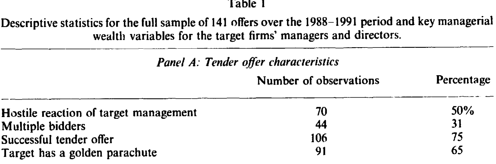
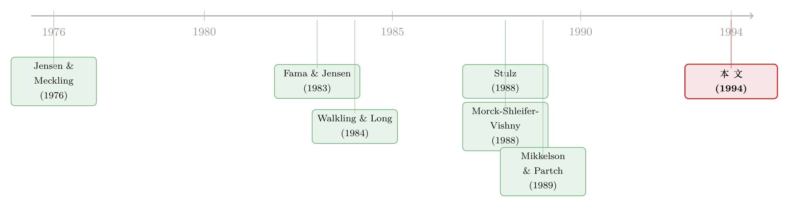
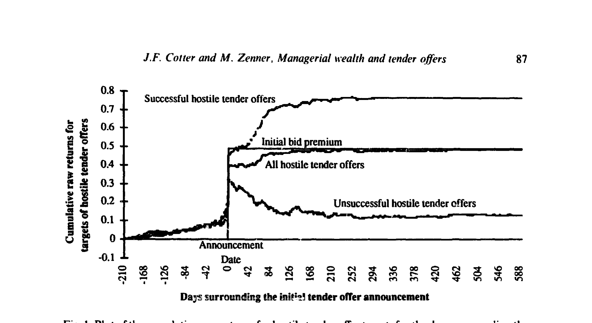

老板该不该抵抗收购？答案写在他自己的股票里
本文读的是 Cotter & Zenner (1994, Journal of Financial Economics)：把目标公司高管在一桩要约收购里的「个人财富变化」一笔笔算成美元，然后去解释他要不要抵抗、收购最终成不成。结论很干脆——抵抗与否、成功与否，几乎全由高管自己持股的那点资本利得说了算；金降落伞和丢掉的薪水都不太管用。更扎心的是：抵抗替最高管理者赚到了钱，却没替外部股东赚到一分。
1 一个所有人都看得见、却没人算清楚的张力
先抛一个再熟悉不过的事实：当一家公司收到收购要约，目标公司的股东通常是欢天喜地的——本文样本里，从传闻前 30 天到首次公告后 5 天，目标股票的累积异常收益平均高达 28%（中位数 29%）。这笔钱白纸黑字，谁都看得见。
可问题在于，替股东做决定的不是股东，是管理层。而对管理层来说，同一桩收购完全是另一本账。
首先，他确实能分一杯羹：手里的股票和期权会随收购溢价水涨船高；运气好，还有一份「金降落伞（golden parachute）」等着。但接着，一个自然的问题是——他可能丢掉什么？如果收购成功、他被换掉，未来若干年的薪水、津贴、在职消费，乃至那种「说了算」的控制权快感，统统蒸发。
于是管理层面对的，是一道很私人的减法题：收购给我带来的财富增量，到底是正是负？ 这道题的答案，理论上应该能预测他会不会跳出来抵抗、这桩收购最后能不能做成。
这正是 Jensen 和 Meckling (1976) 那条老线索的核心——管理层和外部股东的利益本就不一致，而 Stulz (1988) 把它收窄到了一句话：「管理层与外部股东的冲突，唯一的来源，就是一桩成功的收购会以不同的方式改变两者的福利。」（关于 Jensen-Meckling 这条主干，可参见《债务这副药，为什么不能全吃？——重读 Jensen 和 Meckling 五十年》。）
道理人人会讲。但真正难的一步在于：怎么把「管理层的财富增量」这个抽象概念，量成一个可以放进回归的美元数字？这恰恰是 Cotter 和 Zenner 这篇论文最硬核、也最有价值的地方。
2 把「老板的算盘」翻译成两个数字
作者为最高管理者（top executive）和「管理层及董事整体」两个层面，各构造了两个衡量财富变化的指标。
第一个是净现值（net present value, NPV），它就是上面那道减法题的直接落地：
第二个是「收益对损失之比」的对数，它把同样三块料压成一个无量纲的相对量，分布性质更好：
$$ \log\!\left(\frac{G + PV(GP)}{PV(LC)}\right) $$
这两个公式背后藏着一连串需要交代的假设，作者也没有回避：
- 持股的资本利得 G：股票部分，要约价每涨一美元，管理层每股就净赚一美元；期权部分，由于样本里多为平价（at-the-money）发行、且可在 60 天内行权，作者假设管理层能在退市前行权，因而也享受美元对美元的增值。
- 失去薪酬的年数：用
65 − 年龄来估计。但又卡上下限——不足 3 年按 3 年算（因为大多数控制权变更合同保证至少 3 年薪酬），超过 15 年按 15 年算（假设 50 岁以下的高管大概率还能再找一份高管工作；样本里高管年龄从 33 岁横跨到 86 岁）。 - 贴现率：沿用 Jensen 和 Murphy (1990) 的做法，取
3%的实际贴现率；作者声称对贴现率的选择做了敏感性检验，结论稳健。
这套构造的精妙之处在于：它不是用「持股比例」这种粗糙的代理变量，而是把高管的得与失都换算成同一种货币、放到同一个天平上。表 1 给出了这架天平的读数。

Table 1
几个数字值得停下来看一眼。最高管理者的持股比例均值 7.5%、中位数只有 2.1%——多数高管其实持股很少。NPV 的均值是 +$8.17 百万，中位数却是 −$0.14 百万：换句话说，对一半以上的高管而言，一桩成功的收购在个人财富上其实是亏的（失去的薪酬现值压过了持股的资本利得）。这个「均值为正、中位数为负」的劈叉，正是后面所有故事的引线。另外，样本里 65% 的公司设有金降落伞，远高于 Knoeber (1986) 报告的 1982 年 15% 的比例——这正是 1980 年代防御工具大爆发的缩影。
3 抵抗，还是不抵抗？
有了这两个数字，第一个要回答的问题就是：财富算下来更亏的高管，是不是更倾向于抵抗？
答案是肯定的。作者用 logit 回归把「初始是否敌意反应」对管理层财富变化做回归，发现无论是最高管理者层面还是「管理层及董事整体」层面，财富变化越大（越正），初始抵抗的概率越低，关系显著。这与 Walkling 和 Long (1984) 当年用「资本利得 / 一年薪酬」之比得到的结论一脉相承，只是这里的度量更彻底。
但真正关键的一步，是把 NPV 拆开。作者把财富变化拆成三个分量——持股资本利得 G、金降落伞现值 PV(GP)、损失薪酬现值 PV(LC)——分别放进回归。于是反转出现了：
在三个分量里，只有持股资本利得
G对抵抗决策显著；金降落伞和损失薪酬都不显著。
这个结果一刀切开了一个长期的政策迷思。金降落伞被设计出来的初衷，正是为了「赎买」管理层、降低抵抗（Lambert & Larcker, 1985；Knoeber, 1986）。可数据说，真正让老板放下武器的，不是那份遣散费，而是他自己持股能跟着溢价一起涨多少。利益绑定的真正抓手，从来是股权，不是合同条款。
4 抵抗到底替谁赚了钱：这篇论文的真正命门
到这里，故事还只是「管理层为自己打算」。但论文的第二个问题才是它真正的命门——抵抗这个动作，落到收益上，究竟肥了谁？
先看市场反应。作者把要约公告的异常收益对溢价和抵抗一起回归，发现：异常收益与要约溢价正相关（不意外），但在控制了溢价之后，抵抗与异常收益负相关。也就是说，敌意收购的市场收益之所以看起来不比善意收购高，并不是溢价低，而是「抵抗」这件事本身被市场打了折。
然后是最锋利的那一刀。作者把样本按是否抵抗分组，比较三类人的财富效果：外部股东、管理层及董事整体、以及最高管理者。结论是：
平均而言，最高管理者从「抵抗」这个决定里获益，而外部股东并没有。
这就不再是含糊的「代理冲突可能存在」，而是把代理成本指着鼻子量了出来：管理层打着「为股东争取更好价格」的旗号抵抗，账算下来，受益的是坐在最高位子上的那个人，外部股东只是陪跑。这与日后一系列「目标公司 CEO 在谈判桌底下给自己加薪」的证据遥相呼应（可参见《卖掉公司之前，老板先给自己开了张支票》与《最后一分钟的两百万股期权》）。
5 那收购最后做不做得成？
抵抗只是开场。如果管理层不抵抗，要约更容易成功；一旦抵抗，公司能不能被收购，就成了第二阶段的博弈。于是论文的第四个落点是：管理层财富变化，能不能预测收购最终的成败？
能，而且方向一致：财富变化越大，收购成功的概率越高。这印证了 Stulz (1988) 的预测，也和 Mikkelson 和 Partch (1989)、Walkling (1985) 关于「管理层持股越高、收到要约后越可能成功」的发现合拍。
而当作者再一次把财富变化拆开时，那个熟悉的反转又回来了：
在所有分量里，仍然只有持股资本利得
G对收购成功显著。
两个问题（抵抗、成功），同一个答案（持股资本利得）。这种跨问题的一致性，比任何单一回归都更有说服力——它说明驱动整桩收购走向的，是高管口袋里那部分会随溢价膨胀的股权，而不是金降落伞或薪酬恐惧。
6 文献脉络
把这篇论文放回它的坐标系，会更清楚它补上了哪一块。
最上游是 Jensen 和 Meckling (1976) 与 Fama 和 Jensen (1983)：管理层与股东的利益冲突，以及所有权与控制权的分离，是整条线索的地基。接着，Stulz (1988) 把这个一般性冲突收窄成一个关于「投票权控制」的模型，给出了管理层持股与收购成败之间非线性的预测，也明确了冲突的唯一来源就是收购对双方福利的不对称影响。

与此并行的，是一批把「管理层抵抗」当作经验对象的实证：Walkling 和 Long (1984) 用「资本利得 / 薪酬」之比预测抵抗，Morck、Shleifer 和 Vishny (1988b) 比较敌意与善意收购的特征，Walkling (1985) 预测要约成功的概率，Mikkelson 和 Partch (1989) 把投票权和控制权结果对上号。Cotter 和 Zenner 的位置，正是把这两条支流汇到一起：他们既不满足于「持股比例」这种粗糙代理，也不满足于只看抵抗或只看成败——而是用美元化的净现值，把高管的得失算到一张表上，再让它同时解释抵抗、市场反应与最终成败，并第一次干净地指出「抵抗只肥了 CEO」。
7 评论与延伸（Q&A + 研究方向）
(a) 几个可能的疑问
Q：把「失去薪酬的年数」用 65 减年龄、再卡在 3 到 15 年之间，这么粗的假设，结论还可信吗？
这是本文最大的人为构造点。好在作者做了两件事：一是声称对贴现率（3%）的敏感性检验稳健；二是尝试了替代设定——只在收购前一年累积异常收益为负时才算损失薪酬（仿 Martin & McConnell, 1991），或只算「超额薪酬」部分（仿 Walkling & Long, 1984），结果「定性相似但显著性更弱」。所以方向稳健，强度存疑。
Q：金降落伞不显著，是不是因为它本来金额就小、没什么解释力？
表 1 显示金降落伞现值中位数只有
$0.6百万，确实远小于持股资本利得（中位数$1.6百万、均值$10.9百万）。所以「不显著」一部分是金额量级问题。但这恰恰是有意义的发现：现实中金降落伞太小，根本不足以撼动以股权为主的财富天平——它作为「赎买管理层」工具的效果，被高估了。
Q：『抵抗只让 CEO 获益、外部股东没获益』，会不会只是因为抵抗的公司本来就是更差的公司？
这是核心的识别担忧。抵抗与否是内生选择，抵抗的公司可能在溢价、规模、治理上系统性不同。作者通过控制溢价等变量来缓解，但无法完全排除选择效应。严格说，这是一个相关性强、因果待证的结论。
Q：用 1988–1991 这段样本，会不会太特殊？
作者自己强调这段时期「特殊」恰是卖点：毒丸、各类反收购条款、以及 35 个以上州的反收购立法集中涌现，使得管理层手里的防御工具空前丰富。换句话说，这是检验「管理层财富 vs. 抵抗」最有张力的一段窗口。代价是外部有效性——结论未必能外推到防御工具稀缺的年代。
Q：为什么 NPV 的均值为正、中位数却为负？这意味着什么？
因为分布被少数持股极多、资本利得极大的高管拉高了均值。中位数为负说明典型高管在一桩成功收购里个人是亏的。这正解释了为什么抵抗如此普遍（样本里 50% 初始敌意）——对多数高管，配合收购等于自掏腰包。
Q：这和「内幕交易」「16(b) 条款」那条线有什么关系？
本文关注的是公开的持股资本利得和合同赔付，不是隐秘交易。但二者互补：本文说高管会为自己的股权利益左右收购，而目标公司高管在收购前后如何利用信息优势，是另一条平行证据（可参见《does-section-16b-deter-insider-trading-by-target-managers》）。
(b) 几个可能的研究问题与提案
1. 把「财富天平」搬到公司债持有人那一侧。
【经济故事】本文只算了股东与高管的账，但收购（尤其是杠杆收购）会重新分配债权人的财富。高管的抵抗决策，是否也与债券持有人的得失系统性相关？敌意收购里，债主是搭便车还是受害者？ 【可行性】中。需要 TRACE 公司债成交数据 + 收购事件，做债券层面的事件研究。识别难点在于把「财富转移」和「违约风险变化」分开，可借结构模型或评级变动辅助。
2. 用现代高管薪酬数据库重做这篇论文。
【经济故事】本文 1991 年手工从委托书里抠数据，样本仅 141。今天有 ExecuComp，可以把「持股资本利得 vs. 抵抗/成败」放大到几千桩收购，并检验「只有股权显著」是否在不同年代、不同防御环境下依然成立。 【可行性】高。ExecuComp + SDC Platinum 收购库 + CRSP 即可。是一个标准、可发表的复制+拓展型研究。
3. 外资大股东在场时，管理层的「抵抗算盘」会不会变？
【经济故事】当目标公司有大量外资或机构持股时，高管的抵抗更难得逞（投票约束更硬）。外资持有人是放大还是削弱了「高管为私利抵抗」这一渠道？ 【可行性】中。需机构/外资持股数据（如 13F、各国登记）匹配收购样本，用持股结构做异质性分析。识别上可借各国对外资持股的政策变动做准自然实验。
4. 金降落伞「无效」结论的再检验：是金额太小，还是机制本身就错了？
【经济故事】本文说金降落伞不显著，但样本期金降落伞普遍偏小。若在金降落伞更慷慨的现代样本里它依然不显著，就说明「用合同赎买管理层」这条逻辑根本站不住；若变显著，则是金额问题。 【可行性】高。现代薪酬数据里金降落伞条款披露完整，可直接重估其对抵抗与成败的边际贡献。
5. 把「抵抗替谁赚钱」做成因果，而非相关。
【经济故事】本文最锋利的结论（抵抗只肥 CEO）受困于抵抗的内生性。能否找一个外生冲击——比如某州反收购立法的通过，外生地降低了抵抗成本——来识别抵抗对各方财富的因果效应？ 【可行性】中。可用州级反收购法的交错生效做双重差分 (difference-in-differences, DiD)，但要小心交错 DiD 的已知陷阱（参见《how-much-should-we-trust-staggered-difference-in》）。
8 参考文献与我的判断
我的判断。 这篇论文的贡献不在某个惊艳的系数，而在一个朴素却扎实的度量创新：把高管在收购中的得失逐项美元化，然后让同一个构造去解释抵抗、市场反应与成败三件事，并得到高度一致的答案——驱动一切的是高管自己的持股资本利得，不是金降落伞，也不是对薪酬流失的恐惧。它把「代理冲突」从一句理论口号，落成了「抵抗只肥 CEO、不肥股东」这条可量化的事实。
对识别的担忧。 三点。其一，损失薪酬的年数靠 65 − 年龄 这类规则硬凑，构造误差不小，作者自己的替代设定也确实更弱。其二，抵抗、成败都是内生选择，本文给的是稳健的相关性，离干净的因果还有距离。其三，141 个样本、且集中在防御工具爆发的 1988–1991，外部有效性受限。
后续想看到什么。 我最想看的，是用今天的薪酬数据库把它放大重做，并把「财富天平」从股东-高管两方，扩展到债权人与外资股东；以及用反收购立法之类的外生冲击，把「抵抗替谁赚钱」从相关性推到因果。在那之前，这篇论文最该被记住的一句话是：想知道老板会不会替你守住公司，先去看看他自己持了多少股。（关于「收购到底创没创造价值」这个更大的问题，可参见《do-tender-offers-create-value-new-methods-and-evidence》。）

Figure I: Plot of the cumulative raw returns for hostile tender offer targets for the days surrounding the
如上图所示，敌意要约目标公司的累积原始收益在公告日附近陡然抬升——股东的盛宴清晰可见。而本文的全部锋芒，正在于追问：在这场盛宴里，替股东掌勺的那个人，心里到底在算一笔什么账。
参考文献
- Cotter, James F. and Marc Zenner (1994). How managerial wealth affects the tender offer process. Journal of Financial Economics 35(1), 63–97.
- Fama, Eugene F. and Michael C. Jensen (1983). Separation of ownership and control. Journal of Law and Economics 26, 301–325.
- Jensen, Michael C. and William H. Meckling (1976). Theory of the firm: Managerial behavior, agency costs, and ownership structure. Journal of Financial Economics 3, 305–360.
- Jensen, Michael C. and Kevin J. Murphy (1990). Performance pay and top management incentives. Journal of Political Economy 98, 225–264.
- Knoeber, Charles R. (1986). Golden parachutes, shark repellents and hostile tender offers. American Economic Review 76, 155–168.
- Lambert, Richard A. and David F. Larcker (1985). Golden parachutes, executive decision-making, and shareholder wealth. Journal of Accounting and Economics 7, 179–203.
- Martin, Kenneth J. and John J. McConnell (1991). Corporate performance, corporate takeovers and management turnover. Journal of Finance 46, 671–687.
- Mikkelson, Wayne H. and Megan M. Partch (1989). Managers' voting rights and corporate control. Journal of Financial Economics 25, 263–290.
- Morck, Randall, Andrei Shleifer, and Robert W. Vishny (1988b). Characteristics of targets of hostile and friendly takeovers. In: Alan J. Auerbach (ed.), Corporate Takeovers: Causes and Consequences. University of Chicago Press.
- Stulz, René M. (1988). Managerial control of voting rights: Financing policies and the market for corporate control. Journal of Financial Economics 20, 25–54.
- Walkling, Ralph A. (1985). Predicting tender offer success: A logistic analysis. Journal of Financial and Quantitative Analysis 20, 461–478.
- Walkling, Ralph A. and Michael S. Long (1984). Agency theory, managerial welfare, and takeover bid resistance. Rand Journal of Economics 15, 54–68.